This package contains basic mathematical operations, such as summation and multiplication, and basic mathematical functions, such as sqrt and sin, as input/output blocks. All blocks of this library can be either connected with continuous blocks or with sampled-data blocks.
| Name | Description |
|---|---|
| Conversion blocks to convert between SI and non-SI unit signals | |
| Construct inverse model by requiring that two inputs and two outputs are identical | |
| Output the product of a gain value with the input signal | |
| Output the product of a gain matrix with the input signal vector | |
| Sum of Reals: y = k[1]*u[1] + k[2]*u[2] + ... + k[n]*u[n] | |
| Product of Reals: y = u[1]*u[2]* ... *u[n] | |
| Set Real expression that is associated with the first active input signal | |
| Output the sum of the elements of the input vector | |
| Output difference between commanded and feedback input | |
| Output the sum of the two inputs | |
| 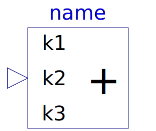 Add3 | Output the sum of the three inputs |
| Output product of the two inputs | |
| 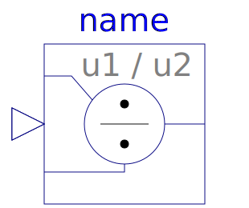 Division | Output first input divided by second input |
| Output the absolute value of the input | |
| Output the sign of the input | |
| Output the square root of the input (input >= 0 required) | |
| 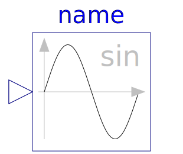 Sin | Output the sine of the input |
| Cos | Output the cosine of the input |
| Output the tangent of the input | |
| 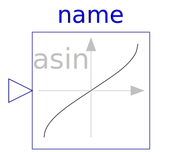 Asin | Output the arc sine of the input |
| Output the arc cosine of the input | |
| 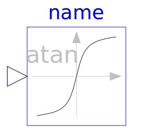 Atan | Output the arc tangent of the input |
| 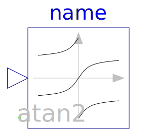 Atan2 | Output atan(u1/u2) of the inputs u1 and u2 |
| 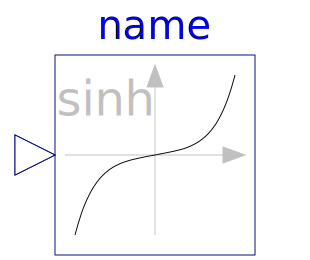 Sinh | Output the hyperbolic sine of the input |
| Output the hyperbolic cosine of the input | |
| 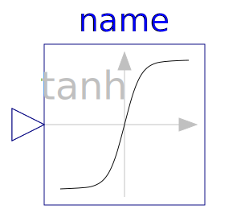 Tanh | Output the hyperbolic tangent of the input |
| Output the exponential (base e) of the input | |
| 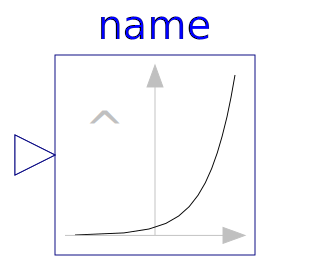 Power | Output the power to a base of the input |
| 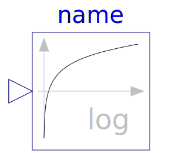 Log | Output the logarithm (default base e) of the input (input > 0 required) |
| 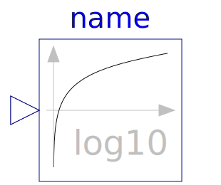 Log10 | Output the base 10 logarithm of the input (input > 0 required) |
| Wrap angle to interval ]-pi,pi] or [0,2*pi[ | |
| Convert Real to Integer signal | |
| 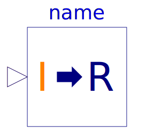 IntegerToReal | Convert Integer to Real signals |
| Convert Boolean to Real signal | |
| Convert Boolean to Integer signal | |
| 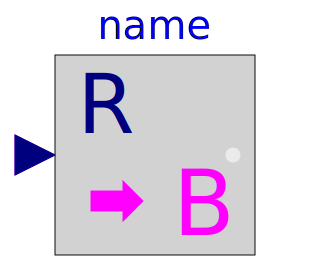 RealToBoolean | Convert Real to Boolean signal |
| Convert Integer to Boolean signal | |
| Convert rectangular coordinates to polar coordinates | |
| Convert polar coordinates to rectangular coordinates | |
| Calculate mean over period 1/f | |
| 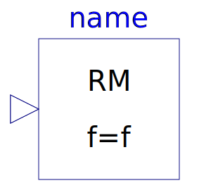 RectifiedMean | Calculate rectified mean over period 1/f |
| Calculates the empirical expectation (mean) value of its input signal | |
| 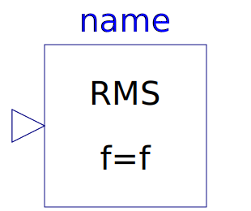 RootMeanSquare | Calculate root mean square over period 1/f |
| Calculates the empirical variance of its input signal | |
| Calculates the empirical standard deviation of its input signal | |
| 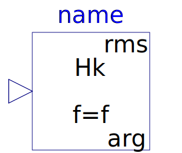 Harmonic | Calculate harmonic over period 1/f |
| Output the total harmonic distortion (THD) | |
| Sampling and FFT of input u | |
| Determine the hypotenuse or leg of a right triangle | |
| Pass through the largest signal | |
| Pass through the smallest signal | |
| Output the minimum and the maximum element of the input vector | |
| Output a linear combination of the two inputs | |
| 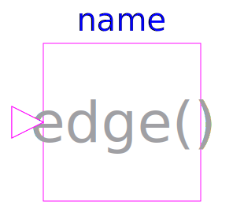 Edge | Indicates rising edge of Boolean signal |
| Indicates Boolean signal changing | |
| Indicates integer signal changing |